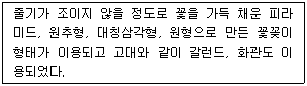
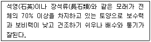
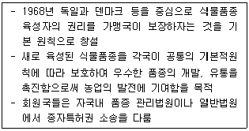

화훼장식기사 (2006-08-06 기출문제)
1과목: 화훼재료 및 형태학
1. 다음 식물과 그 꽃의 구조를 연결한 것 중 틀린 것은?
- 튤립 - 단두화서(單頭花序)의 꽃
- 배추과 - 십자화(十字花)형의 꽃
- 천남성과 - 육수(肉穗)화서의 꽃
- 국화과 - 산형(傘形)화서의 집합꽃
(정답률: 83%)

2. 다음 중 포복경에 대한 설명으로 옳은 것은?
- 자금우는 포복경을 갖고 생장한다.
- 지상부 또는 지하부가 포복하며 자란다.
- 일반적으로 마디에서 부정근이 자란다.
- 층꽃나무는 전형적인 포복경으로 자란다.
(정답률: 65%)
3. 다음 중 화색에 대한 설명으로 옳은 것은?
- 화색은 꽃잎의 두께, 구조, 꽃잎의 색소에 영향을 받는다.
- 화색이란 꽃잎에 함유되어 있는 색소에 의해 가시광선이 흡수 된 광 스펙트럼이다.
- 사람들이 화색을 인식할 때 볼 수 있는 색의 범위는 가시광선을 뺀 나머지 광선이다.
- 색소는 꽃잎을 구성하는 세포 전체에 포함되어 있다.
(정답률: 89%)
4. 칼랑코에 재배에서 암막처리를 하는 목적은?
- 개화시기를 늦추기 위하여
- 도장억제
- 생육을 촉진하기 위하여
- 개화를 유도하기 위하여
(정답률: 65%)
5. 식물 생태학상 향기의 역할이 아닌 것은?
- 곤충을 유인하여 수분(pollination)을 조장한다.
- 꽃과 잎 등에 기생하는 미생물의 번식을 방지한다.
- 생체내의 화학반응을 억제하여 물질의 소모를 줄인다.
- 증산작용을 억제하여 필요 이상의 수분증발을 경감시킨다.
(정답률: 60%)
6. 다음 중 수선화과에 속하지 않는 것은?
- Crinum asiatcum L.
- Clivia miniata Regel.
- Hippeastrum hybridum Hort.
- Gladiolus gandavensis Van Houtte.
(정답률: 58%)
7. 로터리난 공원의 중앙에 설치하여 사방으로부터 관상할 수 있게 만든 화단은?
- 기식화단
- 리본화단
- 모양화단
- 암석화단
(정답률: 86%)
8. 다음 식물 중 불소에 대한 반응이 가장 민감한 것은?
- Euphorbia pulcherrima Willd.
- Aglaonema costatum N.E.
- Ardisia crenata sims.
- Aphelandra squarrosa Nees
(정답률: 42%)
9. 다음 중 춘파 일년초로 바르게 짝지어진 것은?
- 팬지, 시네라리아, 데이지
- 봉선화, 맨드라미, 채송화
- 과꽃, 메리골드, 프리뮬라
- 코스모스, 해바라기, 주머니꽃
(정답률: 89%)
10. 다음 식물 중 방향성 자생식물은?
- Lavandula angustifolia Mill
- Rosa hybrida L.
- Pelargonium hortrum L.H. Bailey
- Thymus quinquecostatus Celak. var. japonica Hara.
(정답률: 69%)
11. 다음 중 화훼식물의 용도에 따른 구분이 가장 바른 것은?
- 절화용 : 꽃도라지, 메리골드, 금어초
- 분화용 : 리시안서스, 금어초, 아프리카바이올렛
- 절지용 : 동백, 측백나무, 나리
- 화단용 : 벌개미취, 붓꽃, 맨드라미
(정답률: 88%)
12. 양지식물이 일정 이하의 약광 하에 놓이면 일어나는 현상이 아닌 것은?
- 잎의 발생 억제
- 줄기나 엽병의 단축
- 화아분화 및 발달의 억제
- 저장기관의 발달 억제
(정답률: 74%)
13. 춘식구근으로 적당하지 않은 식물은?
- Gladiolus gandavensis Van Houtte.
- Canna x generalis Bailey.
- Dahlia hybrida Hort.
- Narcissus tazetta L.
(정답률: 75%)
14. 투명한 유리나 플라스틱 용기 내에 관상식물과 관상용 물고기를 함께 기르는 것은?
- terrarium
- pot-pourri
- topiary
- aquarium
(정답률: 87%)
15. 다음 중 관엽식물로만 이루어진 것은?
- Caladium bicolor Vent. - Fritillaria imperialis L.
- Rhapis excelsa Wendl. - Schefflera actnophylla Harms
- Phalaenopsis spp. - Primula obconica Hance
- Monstera deliciosa Liebm - Dendrobium spp.
(정답률: 65%)
16. 식물의 노화를 촉진시키는 생장조절물질은?
- 에틸렌
- 오옥신
- 사이토키닌
- 지베렐린
(정답률: 82%)
17. 다음 중 잎을 분류하는 방법이 아닌 것은?
- 엽병(葉柄)의 형태
- 엽신(葉身)의 형태
- 엽병의 탁엽(托葉)의 유무
- 엽흔(葉痕)의 형태
(정답률: 80%)
18. Euphorbia pulcherrima 와 Bougainvillea glabra 의 설명으로 옳은 것은?
- 포(苞)가 꽃잎과 같이 발달하여 착색된 것이다.
- 악이 꽃잎과 같이 발달하여 착색된 것이다.
- 웅예가 꽃잎과 같이 발달하여 착색된 것이다.
- 자예가 꽃잎과 같이 발달하여 착색된 것이다.
(정답률: 73%)
19. 다음 중 구근과 구근 형태가 잘못 연결된 것은?
- Freesia hybrida - 근경
- Narcissus spp. - 인경
- Anemonecoronaria - 괴경
- Gladiolusgandavensis Van Hotte - 구경
(정답률: 59%)
20. Adiantum caudatum L. 에 대한 설명으로 틀린 것은?
- 고사리과에 속한다.
- 잎은 단엽 혹은 우상복엽으로 은행잎을 닮았다.
- 습기에 매우 약하므로 건조하게 관리한다.
- 연중 내내 약한 햇빛이 드는 곳에서 관리한다.
(정답률: 80%)
2과목: 화훼품질유지 및 관리론
21. 절화의 취급 방법에 대한 설명 중 옳지 않은 것은?
- 절화는 수확 후 바로 물올림을 실시해야 한다.
- 물올림 과정에서 선도유지 물질을 절화에 흡수시켜야 신선도를 연장시킬 수 있다.
- 물올림 할 때의 물은 pH 7의 중성수여야 미생물 억제 및 수분 흡수력을 증가시킨다.
- 물올림할 때 전처리제를 사용하면 절화의 신선도를 높이고 절화수명을 연장 시킬 수 있다.
(정답률: 70%)
22. 절화의 수소방법에 관한 설명으로 틀린 것은?
- 건식수송은 습식수송에 비해 개화 진전이 빠르므로 반드시 저온상태로 수송하여야 한다.
- 절화 장미의 호흡열은 고추, 샐러리 등 채소의 2배에 달하므로 저온수송이 바람직하다.
- 물의 침지 여부에 따라 건식수송과 습식수송으로 구분한다.
- 예냉 후 저온수송을 하지 않으면 효과가 반감되지만 부득이한 상온수송의 경우 수송 전에 공기구멍을 막는다.
(정답률: 47%)
23. 다음 화훼류 중 가장 적게 관수해야 할 것은?
- 임파티엔스, 페튜니아
- 장미, 수국
- 칼랑코에, 알로에
- 국화, 작약
(정답률: 94%)
24. 다음 중 화훼작품의 관수법으로 틀린 것은?
- 토양의 표토가 건조하고 0.5~1.0cm 깊이의 흙이 습할 때 관수한다.
- 선인장과 같은 다육식물의 경우에는 흙속이 건조하더라도 공기습도가 충분하면 관수할 필요가 없다.
- 수생식물의 경우에는 1일에 2~3회 정도 관수하여 표토가 항상 습한 상태를 유지하도록 해야 한다.
- 기온이 낮을 때에는 오후 4~5시 경에 관수하고 높을 때에는 오전 10시경에 관수하는 것이 좋다.
(정답률: 70%)
25. 다음 천적을 이용한 방제법은?
- 화학적 방제
- 생물학적 방제
- 경종적 방제
- 물리적 방제
(정답률: 87%)
26. 추국을 여름에 개화시키기 위해서는 어떤 처리가 가장 필요한가?
- 심야조명
- 차광처리
- 고온처리
- 저온처리
(정답률: 74%)
27. 화훼의 생리장해 발생 원인과 가장 거리가 먼 것은?
- 공해
- 기상장해
- 토양수분 부족
- 자외선 투과 필름 사용
(정답률: 90%)
28. 토양의 pH가 2.0~4.0일 때 나타나는 현상이 아닌 것은?
- 칼슘과 마그네슘의 흡수가 감소한다.
- 알루미늄과 망간의 흡수가 증가한다.
- 수국의 꽃 색깔이 청색으로 변한다.
- 미생물의 활성이 높아진다.
(정답률: 78%)
29. 가정의 절화관리 방법으로 틀린 것은?
- 수질의 pH는 3~3.5 정도로 유지시킨다.
- 일반적으로 1.5~2% 농도의 자당을 공급한다.
- 재절단 하고 매일 신선한 물로 교체 한다.
- 시원한 바람이 닿는 냉방 기구 앞에 놓는다.
(정답률: 85%)
30. 춘화 현상을 설명한 것으로 옳은 것은?
- 봄에 꽃을 피우는 현상.
- 원산지가 열대, 아열대지방인 식물로 겨울에 고온을 겪어야 꽃눈이 형성되는 현상.
- 원산지에 관계없이 겨울을 따듯하게 지내야 꽃눈이 형성되는 현상.
- 개화를 위하여 생육의 일정한 단계에 일정한 온도 조건을 경과해야 하는 현상.
(정답률: 87%)
31. 주간과 야간의 온도차이가 식물의 생장과 발육에 영향을 미치는 것을 뜻하는 용어는?
- SDP
- DIF
- LDP
- ADT
(정답률: 94%)
32. 이산화황이 식물에 미치는 영향에 대한 설명으로 틀린 것은?
- 잎의 끝이나 가장자리를 황록화 시킨다.
- 어린잎보다 늙은 잎에서 피해증상이 크게 나타난다.
- 표피조직이나 울타리조직 세포를 손상시킨다.
- 아황산가스에 약한 식물로는 과꽃, 국화, 코스모스 등이 있다.
(정답률: 74%)
33. 다음 중 양지식물에 속하는 것은?
- 소철
- 산호수
- 스파티필름
- 스킨답서스
(정답률: 78%)
34. 수송 시 절화를 눕혀 놓으면 화서가 휘므로 반드시 세워서 수송하여야 하는 대표적인 것은?
- 석산
- 금어초
- 안개초
- 아이리스
(정답률: 87%)
35. 수분 부족으로 인한 장해 현상이 아닌 것은?
- 광합성 저하
- 무기양분의 결핍
- ABA 증가
- 세포생장이 억제되고 건물량 증가
(정답률: 54%)
36. 다음 중 물올림 방법이 틀린 것은?
- 10L의 물에 5mL 의 구연산과 10mL의 가정용 표백제를 첨가하여 사용한다.
- 10L 의 수돗물에 3mL의 구연산과 2g의 HQC를 첨가하여 사용한다.
- 끓는 물에 줄기 끝 1~2cm를 수 초 담근 후 찬물에 옮긴다.
- 물올림이 어려운 절화는 계면활성제를 많이 첨가하거나 차가운 물을 사용한다.
(정답률: 77%)
37. 다음 중 이산화탄소 시용이 화훼류에 미치는 일반적인 영향으로 틀린 것은?
- 꽃이 커진다.
- 잎이 작아진다.
- 줄기가 튼튼해진다.
- 중량이 20~25% 증가한다.
(정답률: 78%)
38. 절화를 사과와 함께 저장해서는 안 되는 주된 이유는?
- 사과로부터 병이 이병되기 쉬우므로
- 사과로부터 해충이 옮겨오기 쉬우므로
- 사과로부터 에틸렌이 발생되므로
- 사과 향기가 노화를 촉진하므로
(정답률: 94%)
39. 다음 중 야간에 CO2를 흡수. 고정 하지 않는 식물은?
- 선인장
- 카틀레야
- 돌나물
- 채송화
(정답률: 78%)
40. 다음 상토 가운데 산성이어서 사용 전에 pH 조정이 필요한 것은?
- 피트모스
- 펄라이트
- 버미큘라이트
- 수태
(정답률: 83%)
3과목: 화훼장식학
41. 다음 중 화훼장식의 기술적 측면이 나타나지 않는 것은?
- 임원십육지
- 산림경제
- 태산요록
- 오주연문장전상고
(정답률: 84%)
42. 핸드타이드 부케에 대한 설명 중 틀린 것은?
- 바인딩 포인트를 중심으로 각 줄기를 나선형으로 배열하거나, 줄기를 직렬로 모아 묶어준다.
- 한가지 종류의 식물을 이용하여 제작하는 것이 아름답다.
- 구조물을 이용하여 꽃다발을 크게 제작할 수 있다.
- 완성된 작품은 용기에 꽂거나 세울 수 있도록 제작한다.
(정답률: 85%)
43. 화훼류의 대부분은 장식용으로 이용되지만 일부는 필요에 따라 가공을 거쳐 다양하게 이용되고 있다. 다음 중 화훼가공품에 속하지 않는 것은?
- 염색 건조화
- 압화
- 포푸리
- 분경
(정답률: 84%)
44. 테라리움에 적합한 식물의 특징이 아닌 것은?
- 키가 작고 생장속도가 느린 식물
- 건조에 강한 식물
- 습기에 강한 식물
- 빛이 적어도 잘 자라는 식물
(정답률: 57%)
45. 다음 화훼장식의 기능 중 환경적 기능에 해당되는 것은?
- 꽃의 아름다운 형태, 색, 향기는 차가운 건물의 이미지를 신선하고 아름다운 분위기로 만든다.
- 식물과 함께 있으면 인간은 본능적으로 편안한 느낌을 가진다.
- 실내공간을 분할하고 동선(動線)을 유도하며 시계(視界)를 차폐하는 역할을 한다.
- 식물은 광합성과 호흡을 통해 산소를 공급하고 유해한 이산화탄소를 흡수하여 공기를 정화시킨다.
(정답률: 79%)
46. 조선시대에 분식물에 대한 기록과 관계가 없는 것은?
- 강희안 – 양화소록
- 홍만선 - 산림경제
- 박세당 – 색경증집
- 홍석모 - 동국세시기
(정답률: 42%)
47. 국내에서 화훼류가 가장 많이 소비되는 용도는?
- 경조사 및 화환용
- 교습 및 행사용
- 가정용
- 사무실용
(정답률: 87%)
48. 파티장소에 적은양의 꽃으로 부드러운 곡선의 반원형태로 화려하게 장식하려한다. 가장 잘 어울리는 형태는?
- 초생달형
- 부채형
- 타원형
- 원추형
(정답률: 67%)
49. 생활공간용 화훼장식시 재료별 주요 질감으로 맞는 것은?
- 목재: 치밀함, 인조감, 매끄러움
- 유리: 투명함, 균질감, 신비감
- 플라스틱: 부드러움, 자연감, 온도감
- 금속재: 따뜻함, 친근감, 편함
(정답률: 88%)
50. 신부화에서 줄기 고정부위에 대한 설명으로 틀린 것은?
- 베이스 작업은 보이지 않게 잘 가려주어야 한다.
- 철사 또는 줄기 등은 깨끗이 처리해야 한다.
- 단단히 묶어주어야 한다.
- 아름다운 조형을 위해서는 느슨하게 고정시킨다.
(정답률: 89%)
51. 플라워 홀더(flower holder)를 개발한 시대는?
- 빅토리아 시대
- 조지왕조 시대
- 프렌치 시대
- 바로크 시대
(정답률: 79%)
52. 디스플레이에 대한 설명으로 틀린 것은?
- 디스플레이는 나타내다, 보이다, 전시하다를 의미한다.
- 디스플레이를 위한 화훼장식은 판매촉진을 목적으로 하기도 한다.
- 디스플레이를 위해 전시물, 전시공간, 관람자 특성을 고려해야 한다.
- 디스플레이의 실행은 개념도 작성, 현장조사, 설계, 제작의 순이다.
(정답률: 73%)
53. 고려시대 화훼장식에 대한 설명으로 틀린 것은?
- 꽃문화는 불교문화와 관련성이 깊었다.
- 국가행사에는 꽃의 사용을 자제하는 분위기였다.
- 꽃병으로 청자가 많이 이용되었다.
- 꽃은 머리, 모자, 의복을 장식하기도 하였다.
(정답률: 65%)
54. 서양의 역사와 화훼장식의 일반적인 특징이 옳게 짝지어진 것은?
- 그리스시대 - 다양한 형태의 리스(Wreath)가 발달
- 로코코시대 - 꽃, 과일, 잎 등을 좁게 묶어 나선형으로 제작
- 르네상스시대 - 전염병 방지를 위한 노즈게이 유행
- 영국 조지왕조시대 - 빅토리안 로즈 등장
(정답률: 89%)
55. 다음 중 화훼장식을 위한 작업시설에 해당되지 않는 것은?
- 작업대
- 철사
- 보관대
- 냉장부스
(정답률: 82%)
56. 광선이 식물의 생육에 미치는 영향으로 틀린 것은?
- 광합성 작용은 빛이 있어야 이루어진다.
- 식물색소의 합성은 광의 영향을 많이 받는다.
- 광선에 많이 노출될수록 엽온이 상승된다.
- 모든 종자는 많은 광조건에서 발아가 촉진된다.
(정답률: 89%)
57. 한국의 전통적인 꽃꽂이의 특징이 아닌 것은?
- 인공적인 기교미의 입화
- 불전, 신전, 기타 의식에서의 헌공화
- 생활공간의 꽃장식
- 꽃을 통한 미의 창조로서의 화예 또는 화도
(정답률: 69%)
58. 절화장식을 의뢰받은 경우 요구되는 도면에 관한 것이다. 1:4로 축도된 도면상에 작품의 4길이가 20cm 였을 경우, 실제 길이는?
- 50cm
- 80cm
- 500cm
- 800cm
(정답률: 85%)
59. 걸이분(Hanging basket)에 대한 설명 중 틀린 것은?
- 수평적 공간을 이용하기 위한 식물장식 방법이다.
- 공중걸이 식물은 보통 화분보다 건조속도가 빠르다.
- 실내 공간이 좁은 곳에서 활용도가 높다.
- 줄기나 잎이 늘어지는 습성을 지닌 식물을 공간에 장식한다.
(정답률: 78%)
60. 다음은 유럽의 어느 시대를 설명하는가?

- 고딕시대
- 르네상스시대
- 바로크시대
- 프렌치시대
(정답률: 59%)
4과목: 화훼장식 디자인 및 제작론
61. 디자인 요소 중 질간(texture)에 관한 설명이 틀린 것은?
- 촉각적 질감과 시각적 질감으로 구분된다.
- 어떤 물체가 갖고 있는 표면적 특징을 말한다.
- 매끈한 유리, 거울, 밝은 색의 금속류는 차갑게 느껴진다.
- 시각적 질감은 눈으로 볼 수 있을 뿐만아니라, 손으로 만져서 느낄수도 있는 질감이다.
(정답률: 82%)
62. 실내 정원 조성을 위한 디자인 과정 중 가장 먼저 해야할 것은?
- 디자인 목적 설정
- 조사 분석
- 기본 구상
- 검토
(정답률: 75%)
63. 다음 중 한국의 장례식에 사용하기에 가장 적합한 꽃은?
- 붉은 장미
- 라일락
- 흰국화
- 카네이션
(정답률: 89%)
64. 전통 한국식 꽃꽂이에 대한 설명으로 적절하지 못한 것은?
- 자연에서 식물이 자라는 모습을 화기에 재현한 장식적인 구성이다.
- 특히 나뭇가지 선의 아름다움을 강조한다.
- 대부분 일방형으로 구성된다.
- 1주지는 작품의 높이와 규모를 결정하는 역할을 한다.
(정답률: 47%)
65. 두송이의 다른 색 화훼를 특수한 조명 아래 놓았을 때 같은 색으로 느껴지는 현상은?
- 색의 연색성
- 조건등색
- 색의 항상성
- 푸르킨예현상
(정답률: 59%)
66. 시간적으로 근접하여 연속적으로 제시될 때의 차이에 의해 느껴지는 대비현상은?
- 면적대비(面積對比)
- 동시대비(同時對比)
- 계시대비(繼時對比)
- 명도대비(明度對比)
(정답률: 69%)
67. APEC정상회담의 개회장 장식을 위해 우리나라 전통색인 오방색을 이용하여 장식하려 할 때 특히 고려해야하는 것은?
- 색이 향상성
- 색의 운동감
- 색의 상징성
- 색의 조화성
(정답률: 80%)
68. 다음 중 꽃꽂이에서 온도감 없이 중성적인 느낌의 색은?
- 빨강색
- 초록색
- 파랑색
- 노란색
(정답률: 74%)
69. 두 개 이상의 요소 또는 부분적인 상호관계에서 서로 배척없이 통일되어 전체적인 미적 감각효과를 높이는 형식은?
- 조화
- 대칭
- 대비
- 균형
(정답률: 82%)
70. 다음 설명은 화훼재배시 이용되는 어떤 토양인가?

- 사토(sandy soils)
- 양토(loamy soils)
- 식토(clay soils)
- 부식토(humus soils)
(정답률: 80%)
71. 다음 중 색의 3속성이 아닌 것은?
- 색상
- 채도
- 명도
- 톤
(정답률: 85%)
72. S자형(Hogarth curve)의 특징이 아닌 것은?
- 보름달의 일부분과 같은 원의 한 부분을 나타낸다.
- 부드러운 곡선을 살린 형태이다.
- 위 아래의 외곽선이 좌우로 뚫린 열린 화형이다.
- 중심은 수직과 수평이 만다는 점에 위치한다.
(정답률: 84%)
73. 밝은 보라색 리시안서스와 어두운 보라색 델피니움을 배색한 것은 다음 어느 배색에 해당되는가?
- 토널(tonal) 배색
- 톤온톤(tone and tone) 배색
- 톤인톤(tone in tone) 배색
- 바이컬러(bicolor) 배색
(정답률: 89%)
74. 용기내 식물의 배치방법으로 적절한 것은?
- 중심목은 정 중앙에 심어야만 한다.
- 표면은 이끼로만 덮어야 한다.
- 한 방향에서 바라보는 장식일 경우에는 뒷부분에는 키 큰 식물을 배치한다.
- 사방에서 바라보는 장식은 키 큰 식물을 가장자리에 배치한다.
(정답률: 85%)
75. 다음 중 평행형(parallel)의 설명으로 가장 거리가 먼 것은?
- 수직, 수평, 사선의 어떤 방향으로도 가능하다.
- 여러개의 초점으로부터 나온 줄기의 배열이 같은 방향으로 평행을 이룬다.
- 일반적으로 플로럴 폼을 용기보다 약간 아래로 내려가게 하여 고정한다.
- L자 형태를 기본으로 하는 선형적인 디자인으로 수직선과 수평선이 있다.
(정답률: 90%)
76. 절화를 물올림할 때 좋은 방법이 아닌 것은?
- 날카로운 칼로 줄기를 비스듬히 잘라둔다.
- 줄기 표면과 물 사이의 접촉면적을 넓힌다.
- 일반적으로 목질화된 줄기를 망치로 두들겨 흡수면적을 세분화시킨다.
- 줄기 기부를 물속에서 절단한다.
(정답률: 88%)
77. 다음 중 대비가 가장 큰 것은?
- BG – P
- Y – PB
- Y – G
- B - RP
(정답률: 82%)
78. 주로 팔목이 꽃장식으로 이용되며 꽃팔찌라고도 하는 것은?
- 에포렛(epaulet)
- 부토니아(boutonniere)
- 브레이슬릿(bracelet)
- 앙그렛트(anklet)
(정답률: 75%)
79. 다음 중 2.5B 7/5를 잘못 설명한 것은?
- 오스트발트의 색 표기법이다.
- 2.5R은 색상을 의미한다.
- 7은 명도를 의미한다.
- 5는 채도를 의미한다.
(정답률: 77%)
80. 콜라주(collage) 기법에 관한 설명으로 틀린 것은?
- 20세기에 등장한 독특한 시각예술의 하나이다.
- 평면구성만이 가능하다.
- 2차원적인 회화적 요소에 3차원적인 식물재료와 다른 재료를 혼한구성하는 방법이다.
- 생화와 건조화도 사용할 수 있다.
(정답률: 79%)
5과목: 화훼유통 및 경영론
81. 다음 중 주로 절화로 이용되는 품목이 아닌 것은?
- 페튜니아
- 장미
- 튤립
- 나리
(정답률: 90%)
82. 다음 중 우리나라 화훼 유통 구조의 특징이 아닌 것은?
- 유통시설 미비
- 공동출하 체제의 발달
- 저온시설 부족
- 유사도매시장의 거래 주도
(정답률: 60%)
83. 절화의 품질에 미치는 에틸렌의 영향이 아닌 것은?
- 꽃받침 위조
- 소화 탈리
- 병충해 감소
- 꽃잎 말림
(정답률: 75%)
84. 다음은 어떤 기구에 관한 설명인가?

- UR협상
- WTO
- FTA
- UPOV
(정답률: 75%)
85. 다음 중 화훼류 표준 규격 출하의 특징으로 가장 옳은 것은?
- 생산단가 및 물류비가 증가한다.
- 거래단위의 통일이 어려워 유통능률이 저하된다.
- 생산물의 규격화로 품질향상이 기대된다.
- 포장 내용물의 보호가 어렵다.
(정답률: 84%)
86. 최근 꽃의 통신배달 체계의 급속한 발전으로 화훼유통에 기여한 점이 아닌 것은?
- 홍보에 의한 수요창출
- 꽃 이용의 편리성 제공
- 지역간 꽃 문화를 차별화하므로 고급화 유도
- 영엄대상의 확대
(정답률: 77%)
87. 절화 장미(스탠다드, 대형종)의 표준규격에 대한 설명으로 틀린 것은? (단, 농산물표준규격을 기준한다)(오류 신고가 접수된 문제입니다. 반드시 정답과 해설을 확인하시기 바랍니다.)
- 등급규격은 특, 상, 보통으로 나눈다.
- 등급규격을 결정하는 항목은 꽃, 줄기, 꽃대길이, 개화정도 등이 포함된다.
- 길이 구분은 1급, 2급, 3급으로 나눈다.
- 길이 구분 1급의 1묶음 평균의 꽃대 길이는 80cm 이상이다.
(정답률: 50%)
88. 스탠다드 계통 국화가 길이(초장) 구분에 의한 1급을 받으려면 1묶음 평균의 꽃대 길이는 몇 cm 이상이어야 하는가?(단, 농산물표준규격을 기준으로 한다)
- 95cm
- 85cm
- 75cm
- 65cm
(정답률: 50%)
89. 화훼장식의 소재 판매업에 있어 판매측면에서 갖추어야 할 조건으로 거리가 먼 것은?
- 최고가의 상품만 갖추고 있어야 함
- 화훼소재의 다양한 구색을 갖추어야 함
- 유행하고 있는 품종이나 새로운 품종 도입이 가능하여야 함
- 납품의 확실성과 배달의 신속성이 있어야 함
(정답률: 74%)
90. 유통과정에서 온도가 최적 저온일 경우 나타나는 현상이 아닌 것은?
- 호흡속도 감소
- 에틸렌 생성 감소
- 수분 손실 감소
- 노화 촉진
(정답률: 79%)
91. 선전, 광고에 영향을 받아 소비가 증대되는 현상은?
- 의존효과(Dependence effect)
- 전시효과(Demonstration effect)
- 소득효과(Income effect)
- 스노브효과(Snob effect)
(정답률: 63%)
92. 절화의 이용형태 중 이용율이 가장 높은 품목은?
- 꽃바구니
- 꽃다발
- 꽃상자
- 웨딩부케
(정답률: 75%)
93. 수확 후 절화의 신선도를 유지하기 위한 환경조건으로 맞는 것은?
- 열대원산의 절화는 8-15℃에서 유지하는 것이 좋다.
- 온도는 높고 습도는 낮은 상태가 좋다.
- 절화는 모체로부터 분리되어 광선이 필요하지 않다.
- 절화를 태양 광선이 직접 쪼이는 곳에 두어도 무방하다.
(정답률: 71%)
94. 다음 화훼중 국내 수입량이 가장 많은 품목은? (단, 2004년도 기준)
- 백합
- 난초
- 아이리스
- 카네이션
(정답률: 67%)
95. 화훼류의 유통경로에 관한 설명으로 틀린 것은?
- 절화 유통량의 약 80%는 소도시에 있는 도소매시장 중심으로 거래된다.
- 일반적으로 소매상인 화원 혹은 행상에 의해 최종 소비자까지 전달된다.
- 분화류의 유통은 절화와 달리 수집상의 중계과정을 거쳐 도소매상에게 판매된다.
- 생산자가 출하한 상품은 도소매시장이나 직(공)판장의 중개 기구를 통한다.
(정답률: 65%)
96. 화훼의 소비 특성으로 가장 거리가 먼 것은?
- 선물용 소비가 많다.
- 용도에 따라 상품이 세부적으로 규격화되어 있다.
- 사회관습과 관계가 깊다.
- 대도시 집중적이며 계절성이 강하다.
(정답률: 64%)
97. 저장고 내의 산소 농도를 낮추고 탄산가스 농도를 높여 저장하는 방법은?
- 저온저장
- CA저장
- 감압저장
- 자기촉매저장
(정답률: 86%)
98. 소비자가 계절별로 선호하는 절화 품목으로 적합하게 연결되지 않은 것은?
- 봄 - 카네이션
- 여름 - 백합
- 가을 - 코스모스
- 겨울 - 안개꽃
(정답률: 72%)
99. 절화의 품질을 결정짓는 요건 중 외적품질기준에 해당되지 않는 것은?
- 꽃의 모양과 크기
- 줄기의 굵기 및 강도
- 고유의 선명한 녹색을 유지하고 있는 잎
- 꽃의 수명
(정답률: 85%)
100. 다음 중 화원의 판매 촉진을 위해 가장 먼저 고려해야 할 사항은?
- 판매목표 설정
- 시각적 상품 전시
- 작업 공간의 확보
- 고객과 상담 공간 확보
(정답률: 57%)